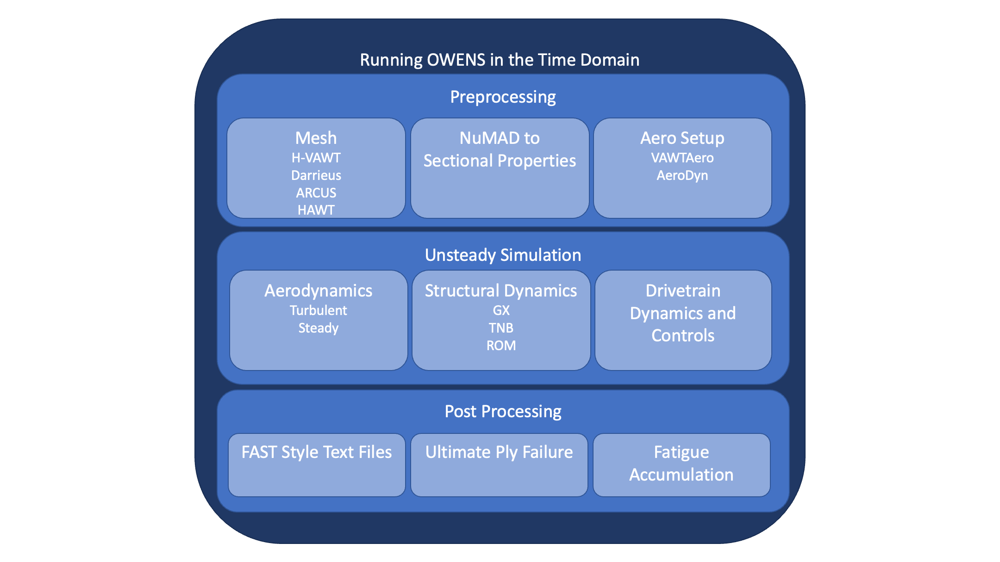

Simply Running OWENS
In this example, we show the first level of what is going on behind the precompiled binary Running julia directly with this as a starting point could make things like automating many runs in a way that is not compatible with the current interface, but your design design fits.
OWENS is comprised of many building blocks. These series of examples progressively shows the internals of several of the key building blocks a new user might employ for their projects. Fundamentally, OWENS has been built to be as generalizable as possible. The lowest level of building blocks enable this, however, there are many common use cases for which helper functions have been developed, such as for meshing certain standard architectures and calculating and applying sectional properties to these architectures. The figure below summarizes this at a high level.

This example is also available as a Jupyter notebook: A_simplyRunningOWENS.ipynb.
import OWENS
runpath = path = "/home/runner/work/OWENS.jl/OWENS.jl/examples/literate" # to run locally, change to splitdir(@__FILE__)[1]
# runpath = path = splitdir(@__FILE__)[1]
modelopt = OWENS.ModelingOptions("$(path)/OWENS_Opt.yml")
designparams = OWENS.Design_Data("$path/WINDIO_example.yaml")
OWENS.runOWENSWINDIO(modelopt,designparams,runpath)Running: WINDIO Example
controlStrategy: prescribedRPM
Hub crossing at idx 1 and radially at 0.1 with AD15 hub radius of 0.1
Moving strut point from [-0.09999999999999999,6.1232339957367656e-18,15.120120012] to [-0.09999999999999999,6.1232339957367656e-18,15.120120012]
Hub crossing at idx 1 and radially at 0.1 with AD15 hub radius of 0.1
Moving strut point from [0.04999999999999998,0.08660254037844387,15.120120012] to [0.04999999999999998,0.08660254037844387,15.120120012]
Hub crossing at idx 1 and radially at 0.1 with AD15 hub radius of 0.1
Moving strut point from [0.05000000000000003,-0.08660254037844385,15.120120012] to [0.05000000000000003,-0.08660254037844385,15.120120012]
Hub crossing at idx 1 and radially at 0.1 with AD15 hub radius of 0.1
Moving strut point from [-0.09999999999999999,6.1232339957367656e-18,101.062789188] to [-0.09999999999999999,6.1232339957367656e-18,101.062789188]
Hub crossing at idx 1 and radially at 0.1 with AD15 hub radius of 0.1
Moving strut point from [0.04999999999999998,0.08660254037844387,101.062789188] to [0.04999999999999998,0.08660254037844387,101.062789188]
Hub crossing at idx 1 and radially at 0.1 with AD15 hub radius of 0.1
Moving strut point from [0.05000000000000003,-0.08660254037844385,101.062789188] to [0.05000000000000003,-0.08660254037844385,101.062789188]
┌ Error: The windio grids must all be the same for a given component at this time
└ @ OWENS ~/work/OWENS.jl/OWENS.jl/src/fileio.jl:38
┌ Error: The windio grids must all be the same for a given component at this time
└ @ OWENS ~/work/OWENS.jl/OWENS.jl/src/fileio.jl:38
┌ Error: The windio grids must all be the same for a given component at this time
└ @ OWENS ~/work/OWENS.jl/OWENS.jl/src/fileio.jl:38
Opening AeroDyn-Inflow library at: /home/runner/.julia/artifacts/40e731aa229ee668f59fa694053de285aeb6d77f/lib/libaerodyn_inflow_c_binding.so
**************************************************************************************************
AeroDyn-Inflow library
Copyright (C) 2024 National Renewable Energy Laboratory
Copyright (C) 2024 Envision Energy USA LTD
This program is licensed under Apache License Version 2.0 and comes with ABSOLUTELY NO WARRANTY.
See the "LICENSE" file distributed with this software for details.
**************************************************************************************************
AeroDyn-Inflow library-v2.5.0-3490-g24c05a74
Compile Info:
- Compiler: GCC version 8.1.0
- Architecture: 64 bit
- Precision: double
- OpenMP: No
- Date: Nov 5 2024
- Time: 02:19:23
Execution Info:
- Date: 06/28/2025
- Time: 00:50:04+0000
Running ADI.
Running AeroDyn.
Running OLAF.
- Directory: /home/runner/work/OWENS.jl/OWENS.jl/docs/build/examples
- RootName: /home/runner/work/OWENS.jl/OWENS.jl/examples/literate/aerodyn.
- Reading advanced options for OLAF:
[WARN] Line ignored: "VERT2" DEFAULT -10 30. 400 5. 5. 1 5.136 15.136 100
- OLAF regularization parameters (for wing 1):
WingReg (min/max) : 12.2425 23.9214
WakeReg (min/max) : 12.2425 23.9214
k = alpha delta nu: 0.0368
Running InflowWind.
┌ Warning: Not using the componetized model is being depreciated, please consider updating to return_componentized=true
└ @ OWENS ~/work/OWENS.jl/OWENS.jl/src/SetupTurbine.jl:293
Running Unsteady
Running in specified rotor speed mode
5.3%┣██▎ ┫ 1/19 [00:00<Inf:Inf, InfGs/it]
[INFO] FVW: Update States: reevaluation at the same starting time. This will not print on
subsequent occurences.
10.5%┣█████ ┫ 2/19 [00:03<00:43, 3s/it]
15.8%┣███████▍ ┫ 3/19 [00:05<00:39, 2s/it]
21.1%┣██████████ ┫ 4/19 [00:07<00:37, 2s/it]
26.3%┣████████████▍ ┫ 5/19 [00:09<00:32, 2s/it]
31.6%┣██████████████▉ ┫ 6/19 [00:11<00:29, 2s/it]
36.8%┣█████████████████▎ ┫ 7/19 [00:13<00:26, 2s/it]
42.1%┣███████████████████▉ ┫ 8/19 [00:15<00:23, 2s/it]
47.4%┣██████████████████████▎ ┫ 9/19 [00:17<00:21, 2s/it]
52.6%┣████████████████████████▏ ┫ 10/19 [00:18<00:18, 2s/it]
57.9%┣██████████████████████████▋ ┫ 11/19 [00:20<00:16, 2s/it]
63.2%┣█████████████████████████████ ┫ 12/19 [00:22<00:14, 2s/it]
68.4%┣███████████████████████████████▌ ┫ 13/19 [00:24<00:12, 2s/it]
73.7%┣██████████████████████████████████ ┫ 14/19 [00:26<00:10, 2s/it]
78.9%┣████████████████████████████████████▎ ┫ 15/19 [00:28<00:08, 2s/it]
84.2%┣██████████████████████████████████████▊ ┫ 16/19 [00:29<00:06, 2s/it]
89.5%┣█████████████████████████████████████████▏ ┫ 17/19 [00:30<00:04, 2s/it]
94.7%┣███████████████████████████████████████████▋ ┫ 18/19 [00:32<00:02, 2s/it]
100.0%┣█████████████████████████████████████████████┫ 19/19 [00:33<00:00, 2s/it]
Simulation Complete.
>>> FINAL WRITE
Saving VTK time domain files
┌ Warning: extractSF is being depreciated in favor of safetyfactor_fatigue, which uses the componetized workflow
└ @ OWENS ~/work/OWENS.jl/OWENS.jl/src/PostProcessing.jl:662
Composite Ultimate and Buckling Safety Factors
UPPER BLADE SURFACE
Minimum Safety Factor on Surface: 6.559609574139627
At time 0.19s at composite station 23 of 31 at lam 5 of 6
Maximum Damage per hr: 6.719332186766936e-10
At composite station 23 of 31 at lam 5 of 6
LOWER BLADE SURFACE
Minimum Safety Factor on Surface: 7.05659360448889
At time 0.19s at composite station 3 of 31 at lam 6 of 6
Maximum Damage per hr: 4.4611442228557124e-10
At composite station 3 of 31 at lam 6 of 6
UPPER TOWER
Minimum Safety Factor on tower Surface: 7.605660675062499
At time 0.19s at composite station 21 of 21 at lam 1 of 1
Maximum Damage per hr: 2.945077494891028e-10
At composite station 21 of 21 at lam 1 of 1
Lower TOWER
Minimum Safety Factor on tower Surface: 7.272118240921332
At time 0.19s at composite station 21 of 21 at lam 1 of 1
Maximum Damage per hr: 3.6503522193589015e-10
At composite station 21 of 21 at lam 1 of 1
Mass of Turbine: 385923.43991763564 kg
WRITING Output File to nothingHere is an example of using the same model against the automated DLC run script. TODO: issue with CI version of turbsim Note that for a setup cutom to a specific design, you'll want to go to the B level to get all of the detailed inputs correct One of these is the controller where a discon controller library can be coupled instead of the specified RPM control.
modelopt.DLCOptions.DLCs = ["11"] #"normal"
modelopt.DLCOptions.DLCs = ["13","6_1"] #"normal"
OWENS.runDLC(modelopt,designparams,runpath)
nothingThis page was generated using Literate.jl.